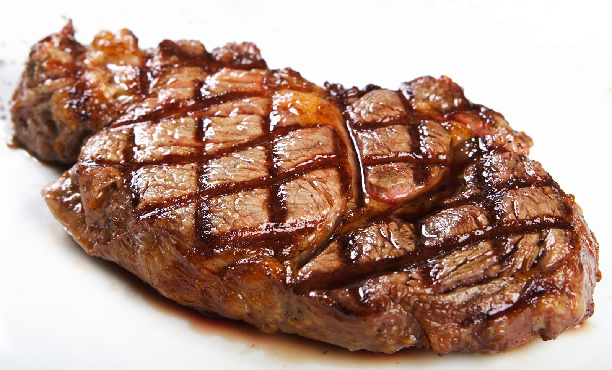

Preparation Time
Over Night
Cooking Time
10 Mins
Serve
Serves 6
Dietary
V

Food
Marinated Bavette Steak
Bavette is the external part of the skirt [onglet being the internal connectiong tissue] it is, as many butchers put it, " Sear the Hell out of it and serve it Rare". I find 2 Minutes a side on every hot, ridged griddle optimum.
Food
What You Need
- 50g/ 1oz tarmarind paste
- 4 tbsp soy sauce
- 4 tbsp hot water, from a recently boiled kettle
- 2 tbsp sunflower oil
- 1 tbsp runny honey
- 750g/ 1lb 10oz [ Whole Piece ] bavette steak
Nutrition information is estimated based on the ingredients and cooking instructions as described in each recipe and is intended to be used for informational purposes only.
Food
Let's Cook...
- Put the tamarind paste, soy and hot water into the smallest saucepan you have, and stir over a low heat to dissolve the tamarind. When it’s as smooth as you think you can get it – the tamarind paste I use says it’s without stones, but I do find the odd one, and I don’t bother to get rid of them – remove to a bowl or jug, whisk in the oil and honey, and leave to cool. Do not use until it is cold.
- Put the bavette steak into a resealable freezer bag, pour in the cold marinade and squelch it about so that the thin steak is covered on both sides, then seal, lay on a plate and put in the fridge overnight or for 1 day.
- Bring it back to room temperature, prepare a large piece of kitchen foil, then heat a ridged griddle till very, very hot. Lift the steak out of its marinade, letting any excess (and there will be a lot) drip back into the bag and then slap the meat on the griddle and cook for 2 minutes a side.
- Immediately (I use tongs for all this) transfer the steak to the piece of foil and make a tightly sealed but baggy parcel, and let the meat rest, on a chopping board, or any surface that is not too cold, for 5 minutes. Then unwrap the foil, transfer the steak to a board, and carve in thin slices against the grain.